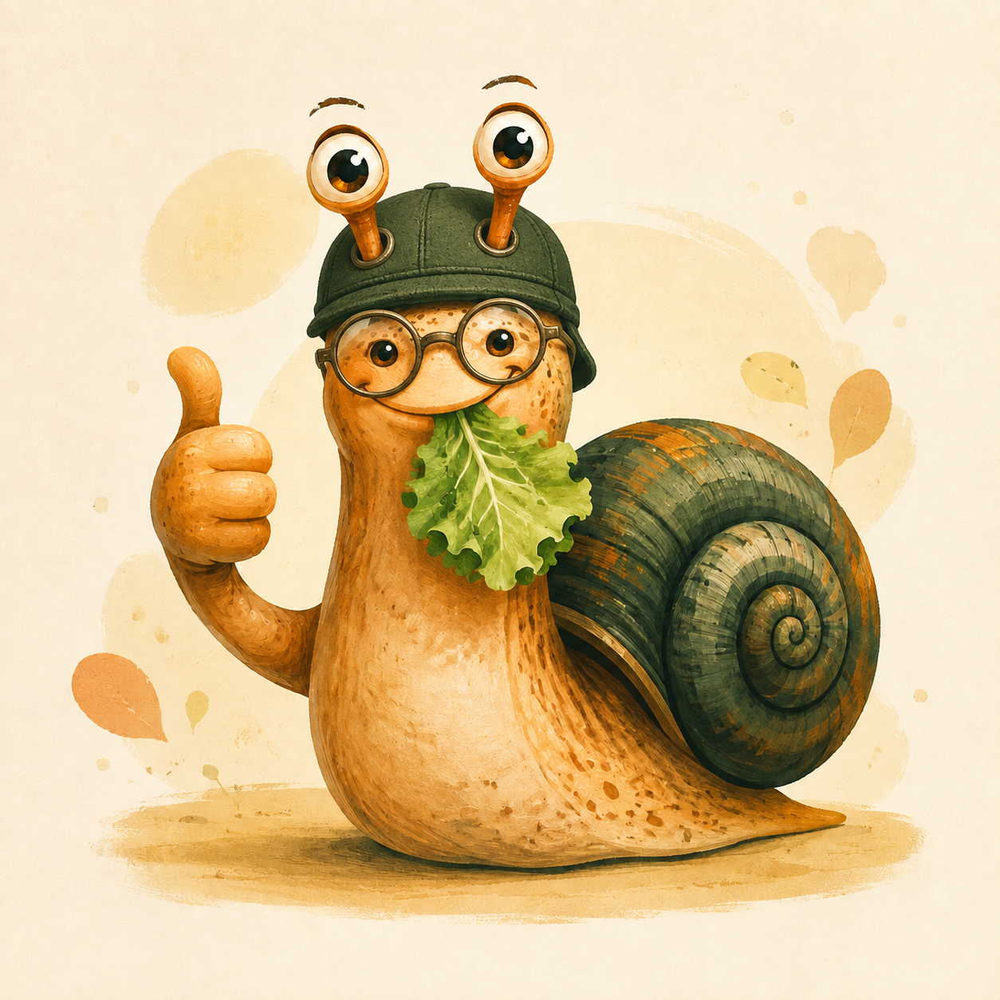

🧊
Avant la prochaine glaciation
Pour les objets importants, mais pas au point de courir.
Vos colis avancent avec méthode, dignité et une vitesse soigneusement négociée avec la géologie.
Calculer mon délai (enfin, l’estimer)Une fausse entreprise, de vraies idées de présentation : cartes de services, hiérarchie claire et petites touches de personnalité.
Pour les objets importants, mais pas au point de courir.
Livres, chaussettes célibataires et souvenirs qui peuvent attendre.
Un abonnement pour recevoir des nouvelles de votre colis et de sa vie intérieure.
Livraison locale, horizon souple.
Un suivi émotionnel du colis.
Mais prévoyez quelques ères.
Non. C’est une fiction réalisée par MoreTIC pour montrer ce qu’un site vitrine peut raconter et faire.
Non. Le simulateur, le suivi et le formulaire fonctionnent localement dans votre navigateur.
Parce qu’il a une excellente image de marque et ne demande jamais de livraison express.
“Mon colis est arrivé juste après que j’ai cessé de l’attendre. Timing remarquable.”
— Personne fictive, patience confirmée
“J’ai suivi le colis. Puis j’ai suivi un escargot dans mon jardin. Même énergie.”
— Témoignage inventé, jardin réel non vérifié
“Le service client m’a répondu avant le colis. Une prouesse narrative.”
— Avis de démonstration, sans portrait
Ce formulaire montre une validation et une confirmation. Il ne transmet rien et ne crée aucun compte.
Une identité visuelle singulière, du contenu qui donne envie de lire, des interactions locales, un formulaire clair, une expérience responsive et des bases d’accessibilité solides — sans ajouter de complexité inutile.
Notre technicien travaille lentement, mais il garde le moral. Scannez le QR code ou recherchez @escargotexpress dans Revolut.
Le paiement est réel et facultatif. Vérifiez le destinataire avant de confirmer. Escargot Express reste une fiction réalisée par MoreTIC.